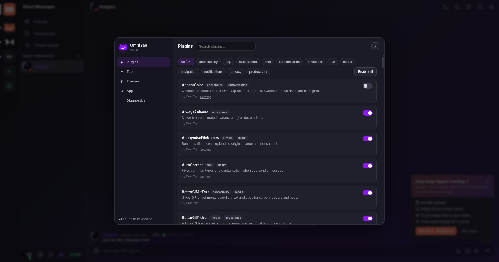

97 plugins
Privacy, chat, media, voice, themes and developer tools. Search, filter and toggle them from one panel.
OmniYap is a desktop client and plugin platform for Yapper. A quieter chat, better calls, real themes and 97 plugins that stay out of your way.
Small fixes and serious tools, all switchable. Nothing is forced on you, and every feature is local-first.
Privacy, chat, media, voice, themes and developer tools. Search, filter and toggle them from one panel.
Import CSS themes, keep a Quick CSS scratchpad, and switch themes without reloading. Accent colour included.
Tray, start-minimised, native notifications, badge counts, screen-share picker and global media keys.
Silent typing, tracked-link stripping, local message logging and a word filter that only affects your screen.
Read-aloud, voice-channel narration, font and size controls, reduced motion and high-contrast friendly UI.
A Vencord-shaped plugin API: settings, message decoration, source patches and a live module finder.
OmniYap's settings live in their own overlay, so Yapper's UI never fights with them. Each plugin documents what it changes, and disabling one undoes it immediately — including its CSS, listeners, timers and patches.

Every plugin ships in the app. Filter by category, search by name, and enable it in Settings → Plugins.
No plugins match that search.
OmniYap is a standalone app. It does not modify Yapper's servers or your account.
Use the button above — it detects your OS from the latest GitHub release.
AppImage: chmod +x then run. Debian/Ubuntu: install the .deb. Windows: run the installer.
Log in as usual. Open Ctrl + , to choose plugins, themes and app settings.
git clone https://github.com/Aragasu/omniyap.git && cd omniyap && npm install && npm run start
OmniYap is an unofficial client that loads Yapper's website in a desktop window and adds local features. It does not automate your account or bypass permissions. Check Yapper's terms before using any third-party client.
The app is the supported target. The plugin runtime can run in a browser during development, but tray, screen sharing, native notifications and file dialogs need the desktop app.
In OmniYap's own data folder on your computer, never on a server. Themes, plugin options, message logs and notes stay local. You can export diagnostics without including message content.
Equicord's 365 plugins target Discord's internals — webpack modules, Flux stores and a permission model Yapper does not have. The plugin matrix lists every one and explains whether it is ported, native, planned or impossible.
Download the latest release from this page or GitHub. Your settings and plugins live outside the app bundle, so they survive updates.